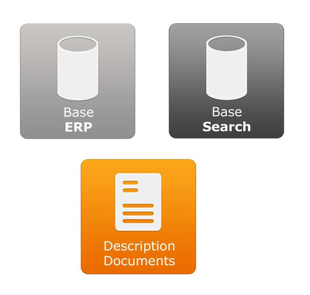

Le moteur de recherche effectue les recherches dans une base de données spécialement adaptée à la recherche que nous appellerons la base Search. Elle est alimentée à partir des données du système d'informations de l'entreprise, qui comporte les bases de données, mais également les pièces jointes associées. Nous appellerons ces données la base ERP. La description des documents établit le lien entre les données de la base ERP et celles de la base Search.

La base Search est gérée le service DhsSearchServer..
Le client Search dialogue avec le serveur de recherche en mode client/serveur. A chaque processus de recherche client correspond un thread sur le serveur de recherche. Le serveur renvoie le résultat de la recherche vers le client.
La console d’administration XSearchConsole permet de visualiser l’activité du serveur et d’effectuer des actions (par exemple l’indexation d’un document, l’arrêt du serveur etc.)
Un même serveur peut héberger plusieurs services Search par exemple si l’on souhaite physiquement séparer les bases pour un serveur en mode ASP ou pour une application sensible comme la paie.